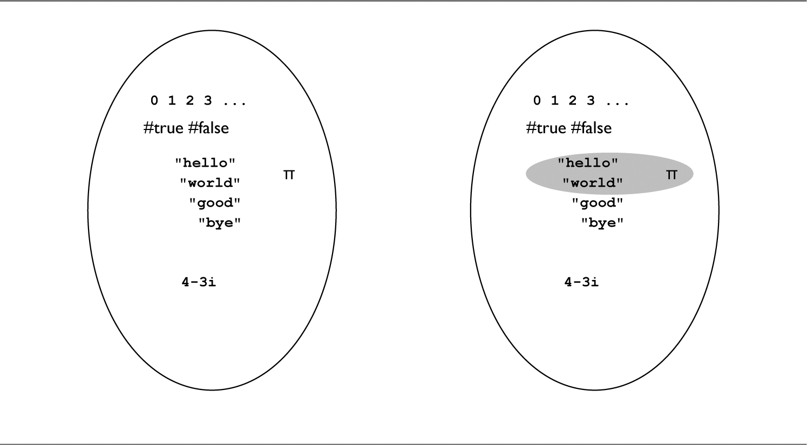
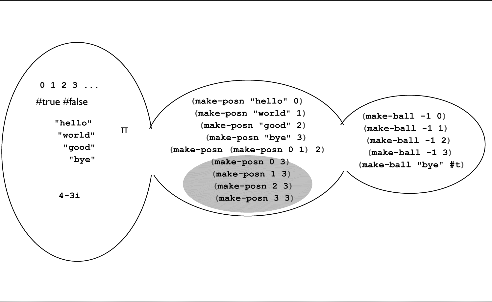

5.7 The Universe of Data
Every language comes with a universe of data. This data represents information from and about the external world; it is what programs manipulate. This universe of data is a collection that not only contains all built-in data but also any piece of data that any program may ever create.
Remember that mathematicians call data collections or data classes sets.
The left side of figure 30 shows one way to imagine the universe of BSL. Since there are infinitely many numbers and strings, the collection of all data is infinite. We indicate “infinity” in the figure with “⋯”, but a real definition would have to avoid this imprecision.

Figure 30: The universe of data
Neither programs nor individual functions in programs deal with the entire universe of data. It is the purpose of a data definition to describe parts of this universe and to name these parts so that we can refer to them concisely. Put differently, a named data definition is a description of a collection of data, and that name is usable in other data definitions and in function signatures. In a function signature, the name specifies what data a function will deal with and, implicitly, which part of the universe of data it won’t deal with.
Practically, the data definitions of the first four chapters restrict built-in collections of data. They do so via an explicit or implicit itemization of all included values. For example, the region shaded with gray on the right side in figure 30 depicts the following data definition:
; A BS is one of:
; --- "hello",
; --- "world", or
; --- pi.
While this particular data definition looks silly, note the stylized mix of English and BSL that is used. Its meaning is precise and unambiguous, clarifying exactly which elements belong to BS and which don’t.
The definition of structure types completely revised the picture. When a programmer defines a structure type, the universe expands with all possible structure instances. For example, the addition of posn means that instances of posn with all possible values in the two fields appear. The middle bubble in figure 31 depicts the addition of these values, including such seeming nonsense as (make-posn "hello" 0) and (make-posn (make-posn 0 1) 2). And yes, some of these instances of posn make no sense to us. But, a BSL program may construct any of them.

Figure 31: Adding structure to a universe
Adding yet another structure type definition mixes and matches everything again. Say we add the definition for ball, also with two fields. As the third bubble in figure 31 shows, this addition creates instances of ball that contain numbers, posn structures, and so on, as well as instances of posn that contain instances of ball. Try it out in DrRacket! Add
(define-struct ball [location velocity])
to the definitions area, hit RUN, and create some structure instances.
As far as the pragmatics of data definitions is concerned, a data definition for structure types describes large collections of data via combinations of existing data definitions with instances. When we write
; Posn is (make-posn Number Number)
we are describing an infinite number of possible instances of posn. Like above, the data definitions use combinations of natural language, data collections defined elsewhere, and data constructors. Nothing else should show up in a data definition at the moment.
A data definition for structures specifies a new collection of data made up of those instances to be used by our functions. For example, the data definition for Posns identifies the region shaded in gray in the center bubble of the universe in figure 31, which includes all those posn structures whose two fields contain numbers. At the same time, it is perfectly possible to construct an instance of posn that doesn’t satisfy the requirement that both fields contain numbers:
(make-posn (make-posn 1 1) "hello")
This structure contains a posn in the x field and a string in the y field.
Exercise 76. Formulate data definitions for the following structure type definitions:
• (define-struct movie [title producer year])
• (define-struct person [name hair eyes phone])
• (define-struct pet [name number])
• (define-struct CD [artist title price])
• (define-struct sweater [material size producer])
Make sensible assumptions as to what kind of values go into each field. 
Exercise 77. Provide a structure type definition and a data definition for representing points in time since midnight. A point in time consists of three numbers: hours, minutes, and seconds.
Exercise 78. Provide a structure type and a data definition for representing three-letter words. A word consists of lowercase letters, represented with the 1Strings "a" through "z" plus #false. Note This exercise is a part of the design of a hangman game; see exercise 396.
Programmers not only write data definitions, they also read them in order to understand programs, to expand the kind of data they can deal with, to eliminate errors, and so on. We read a data definition to understand how to create data that belongs to the designated collection and to determine whether some piece of data belongs to some specified class.
Since data definitions play such a central and important role in the design process, it is often best to illustrate data definitions with examples just like we illustrate the behavior of functions with examples. And indeed, creating data examples from a data definition is straightforward:
• for a built-in collection of data (number, string, Boolean, images), choose your favorite examples;
Note On occasion, people use descriptive names to qualify built-in data collections, such as NegativeNumber or OneLetterString. They are no replacement for a well-written data definition. End
• for an enumeration, use several of the items of the enumeration;
• for intervals, use the end points (if they are included) and at least one interior point;
• for itemizations, deal with each part separately; and
• for data definitions for structures, follow the natural language description; that is, use the constructor and pick an example from the data collection named for each field.
That’s all there is to constructing examples from data definitions for most of this book, though data definitions are going to become much more complex than what you have seen so far.
Exercise 79. Create examples for the following data definitions:
• ; A Color is one of:
; --- "white"
; --- "yellow"
; --- "orange"
; --- "green"
; --- "red"
; --- "blue"
; --- "black"
Note DrRacket recognizes many more strings as colors. End
• ; H is a Number between 0 and 100.
; interpretation represents a happiness value
• (define-struct person [fstname lstname male?])
; A Person is a structure:
; (make-person String String Boolean)
Is it a good idea to use a field name that looks like the name of a predicate?
• (define-struct dog [owner name age happiness])
; A Dog is a structure:
; (make-dog Person String PositiveInteger H)
Add an interpretation to this data definition, too.
• ; A Weapon is one of:
; --- #false
; --- Posn
; interpretation #false means the missile hasn't
; been fired yet; a Posn means it is in flight
The last definition is an unusual itemization, combining built-in data with a structure type. The next chapter deals with such definitions in depth.